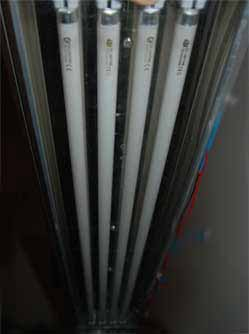

Planted Aquarium Lighting
WHAT LIGHTS ARE SUITABLE FOR THE AQUARIUM?

Aquarium lighting is important for plant growth and fish health in the aquarium. It is especially important in planted and
aquascaped tanks when caring for demanding plant species with high light requirements. In nature the sun is the sole source of
lighting for freshwater plants and replicating this requires very bright light fixtures.
Recently LED lights have become widespread, available and affordable. LED lights utilize the latest technology allowing for
lower wattage with the same output. They are highly customizable and many commercial products exist in a wide variety of
spectrums.
Click here
to read about the best planted LED light fixtures. They release less heat and use less power, an excellent choice for the modern
aquarist. 1w+ per gallon of LED lighting is sufficient for a planted aquascape.
With T5 or metal halide fixtures 2-3+ watts
of lighting per gallon of aquarium water is sufficient. A deeper tank may require more lighting while a shallower tank may
require less. Light bulb temperature should be kept between 6700k and 10,000k. These temperatures will more closely match sunlight
and give the plants the required light spectrum needed to grow.

Metal Halides
- Metal Halides are very bright ranging from 100-400 watts. Due to halides being a single source of light they can give a
shimmering effect in the aquarium which is sometimes desirable. The downside to metal halides is they become very hot while
in use and need to be hung or placed above the tank.
- They use more energy for the same ouput when compared to newer
technologies such as T5s and LEDs. Newer clip on style halides are easier to attach and they are a good choice for smaller
deeper aquariums. Since the introduction of LED technology metal halide lighting is slowly being phased out due to it being
less economical.
- Advantages- Very bright and useful for deep tanks. Can
give desirable shimmering effect simulating nature.
- Disadvantages- Very hot and can increase tank
temperature. Inefficient and wastes power compared to other technologies.

T5 –Fluorescents

- T5 lighting is a newer technology than metal halide. They are the thinner and brighter sibling of T8 fluorescent bulbs. For
their size they can output high wattage that is evenly distributed to the aquarium. This will aid in improving the overall
healthiness and growth of your plants in all areas of the aquarium.
- There will be no rippling effect in the
aquarium but rather an even glow from corner to corner. T5's fixtures are reasonable however specialized globes can be
quite expensive. They also need to be replaced far more often than LEDs as the bulbs spectrum can change over time
contributing to algae growth.
- Advantages- Bright even aquarium lighting. Often fixtures include leg mounts for standard size tanks.
- Disadvantages- Initial bulb cost can be expensive. No ripling effect that mimics nature. Less efficient
than LED fixtures.

LED Fixture
- LED are the newest lighting technology to emerge in aquarium fixtures. LED's are backed by technology that is already setup
to growing indoor plants. The technology is rapidly becoming cheaper and more advanced than T5 or metal halides. High
wattage LED's are extremely bright and can be combined with lenses for even deeper tanks. Clusters of LED's will be less
effecient but give the aquarium a rippled appearance mimicking nature. Strips of LEDs can be less effective and a buyer
should be certain they are high quality high wattage LEDs that will deliver correct lighting to the plants.
This article
goes into more detail on appropriate light fixtures for planted tanks.
- Advantages- The most effecient solution requiring the least energy for the same lighting. Bulbs do not need
to be replaced for up to 50,000 hours. LEDs emit low heat and due to their small size they are often lightweight fixtures.
- Disadvantages- Higher initial setup cost.
Choosing the Bulb
Choosing the right type of bulb is important to give both the best aesthetic look and the growth needed. The sun is around 6500k
(kelvins which is a color temperature). Below 6000k will be very yellow in colour and give the tank an unpleasant look. 10,000k is
a crisp white and should be the upper spectrum of planted aquarium lighting. T5 and LED fixtures are most effective with a mix
between 6700k and 10000k. When using metal halides 10,000k is a safe choice for both color and growth. Avoid blue/actinic lighting
this will have no effect on plant health and growth.